₫
Thu Chi Gia Đình
Biết tiền nhà mình đi đâu mỗi tháng: học phí, điện nước, mỹ phẩm, Shopee, TikTok, MoMo…
Nội dung
- Cài đặt (5 phút)
- Mở lần đầu và kết nối Gmail
- Đưa khoản chi vào app: Gmail, ảnh chụp, nhập tay
- Xem tháng này chi bao nhiêu cho từng việc
- Ngân sách và tự phân loại
- Đối chiếu sao kê thẻ Visa
- Sao lưu và những điều cần biết
- Ghi chú cho bản thử nghiệm
Phiên bản {{VERSION}} (bản thử nghiệm) · Mọi dữ liệu chỉ nằm trên máy Mac của bạn, không gửi lên mạng.
1. Cài đặt
Trước khi bắt đầu, kiểm tra máyBấm vào biểu tượng ở góc trên bên trái màn hình →
About This Mac (Giới thiệu về máy Mac này). App chạy trên macOS 11 (Big Sur) trở lên.
Dòng Chip ghi Apple M1, M2… thì dùng file cài đặt “chip Apple”; dòng Processor (Bộ xử lý)
ghi Intel thì dùng file “chip Intel”. Đọc ảnh chụp biên lai cần macOS 13 trở lên; máy cũ hơn
vẫn nhập tay và nhận khoản chi từ iPhone bình thường.
- Mở file “2. File cài đặt … .dmg” đúng loại chip của máy, trong thư mục này. Một cửa sổ hiện ra có biểu tượng app và thư mục Applications.
- Kéo biểu tượng Thu Chi Gia Dinh thả vào thư mục Applications.
- Mở Launchpad (hoặc Finder → Applications) và bấm vào Thu Chi Gia Dinh.
- Lần đầu, máy sẽ báo không mở được, với nội dung kiểu
“Apple could not verify ‘Thu Chi Gia Dinh’ is free of malware…”. Đây là bình thường vì app không tải
từ App Store. Bấm Done (Xong).
- Vào System Settings (Cài đặt hệ thống) → Privacy & Security (Quyền riêng tư & Bảo mật).
Kéo xuống dưới cùng, thấy dòng nhắc tới “Thu Chi Gia Dinh”, bấm Open Anyway (Vẫn mở), rồi nhập mật khẩu máy.
Chỉ phải làm một lần. Trên macOS 11 và 12: System Preferences → Security & Privacy → tab
General → Open Anyway.
MẹoKéo biểu tượng app từ Launchpad xuống thanh Dock để lần sau mở nhanh.
2. Mở lần đầu và kết nối Gmail
App chào bạn và hỏi tên. Gõ tên rồi bấm Bắt đầu →, app sẽ dẫn bạn kết nối Gmail.
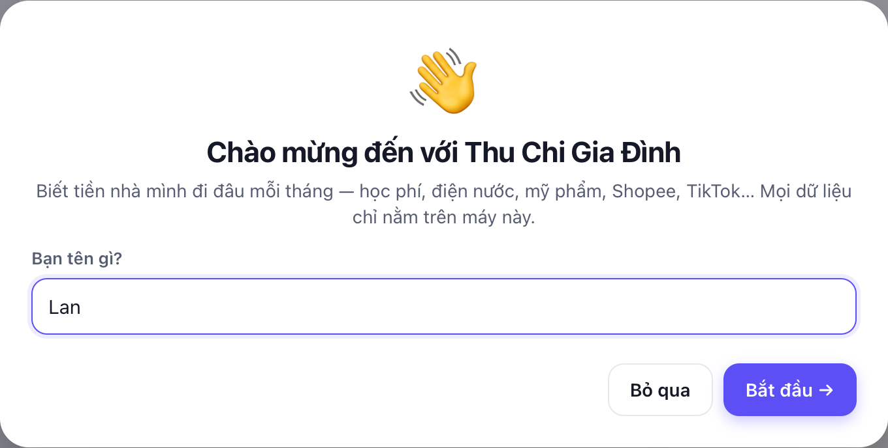
Bước 1 · Bật Xác minh 2 bước cho Gmail
Google chỉ cho app đọc Gmail khi tài khoản đã bật Xác minh 2 bước. Nếu bạn đã bật rồi (đăng nhập Gmail
trên máy mới thì điện thoại hỏi xác nhận), bấm Đã bật, tiếp →.
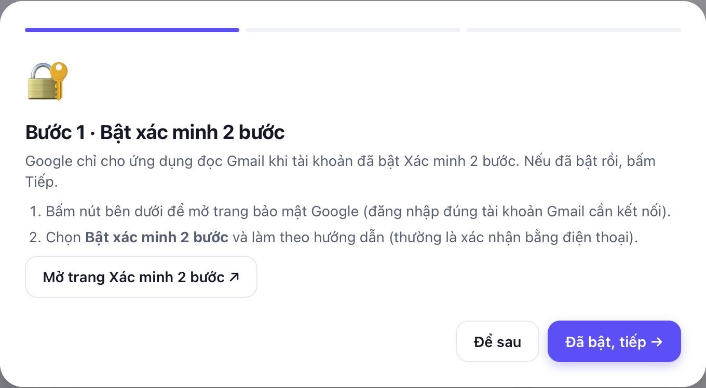
Bước 2 · Tạo “Mật khẩu ứng dụng”
Đây là một mật khẩu riêng cho app này, gồm 16 ký tự, không phải mật khẩu Gmail của bạn. App chỉ dùng nó để đọc
email đơn hàng. Bạn có thể xoá nó trên trang Google bất cứ lúc nào.
- Bấm Mở trang Mật khẩu ứng dụng ↗. Trang Google mở ra; đăng nhập đúng Gmail của bạn nếu được hỏi.
- Ô Tên ứng dụng (App name): gõ Thu Chi → bấm Tạo (Create).
- Google hiện 16 ký tự trong khung vàng. Bôi đen rồi bấm ⌘ + C để sao chép.
- Quay lại app, bấm Đã sao chép, tiếp →.
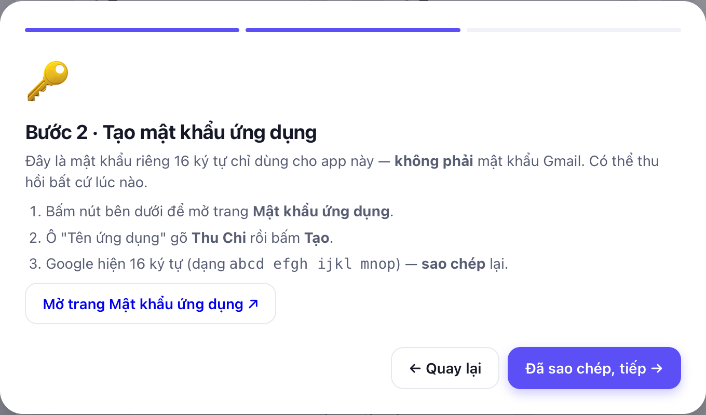
Nếu trang Google báo “The setting you are looking for is not available for your account”
nghĩa là Xác minh 2 bước chưa bật, hoặc đây là Gmail công ty/trường học bị chặn tính năng này. Hãy bật Xác minh 2 bước
rồi thử lại, hoặc dùng Gmail cá nhân.
Bước 3 · Kết nối
Gõ địa chỉ Gmail, dán mật khẩu ứng dụng bằng ⌘ + V (có dấu cách hay không đều được), rồi bấm Kết nối.
Thấy “Đã kết nối! 🎉” là xong; bấm Đồng bộ ngay.
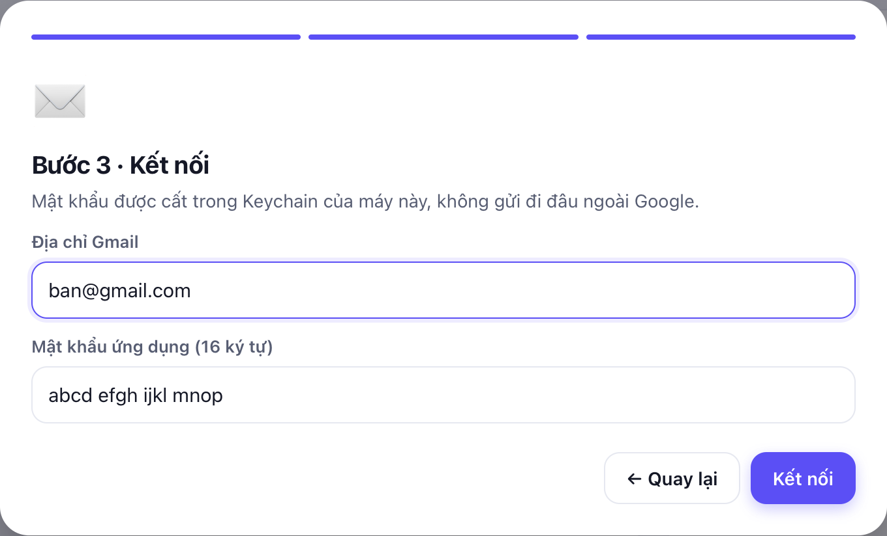
Mật khẩu này được cất ở đâu?Trong Keychain (két sắt mật khẩu) của macOS, giống như mật khẩu
Wi-Fi. Không ai khác, kể cả người làm ra app, nhìn thấy được.
3. Đưa khoản chi vào app
Có ba cách, dùng kết hợp được. Tất cả nằm trong mục Nhập dữ liệu ở cột bên trái.
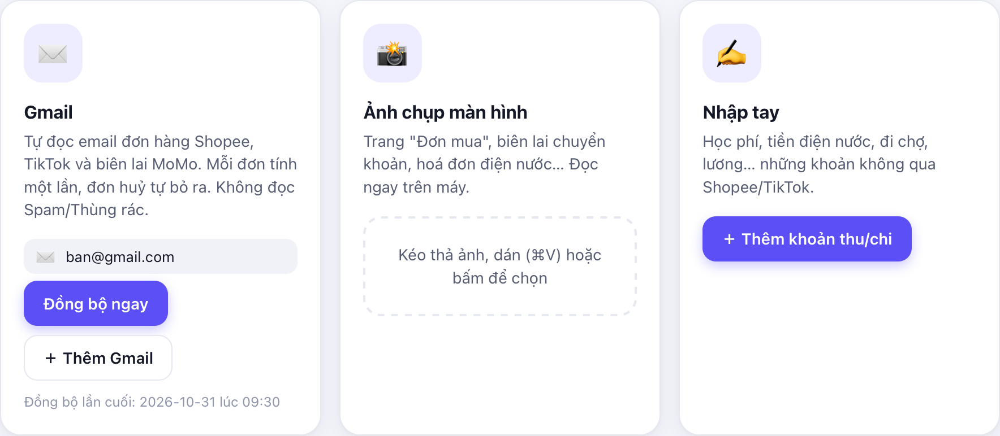
Cách 1 · Gmail: tự động
Bấm Đồng bộ ngay khoảng mỗi tuần một lần. App đọc email đơn hàng Shopee, TikTok Shop và biên lai
MoMo trong 6 tháng gần nhất:
- Mỗi đơn chỉ tính một lần, dù Shopee gửi nhiều email (đặt hàng, đang giao, đã giao).
- Đơn bị huỷ tự động không tính.
- Email quảng cáo, khảo sát thì bỏ qua.
- App đọc Hộp thư đến, các tab Quảng cáo/Mạng xã hội và thư đã lưu trữ, nhưng không đọc Spam/Thùng rác.
Nếu đồng bộ xong mà không có đơn nàoShopee và TikTok nhiều khi chỉ báo đơn trong app điện thoại, không gửi email.
Khi đó dùng Cách 2: chụp màn hình trang “Đơn mua”. Một ảnh chụp được nhiều đơn.
Cách 2 · Ảnh chụp màn hình: MoMo, ngân hàng, Shopee “Đơn mua”, hoá đơn
- Trên iPhone, mở biên lai trong MoMo hoặc app ngân hàng (hay trang Đơn mua của Shopee), rồi chụp màn hình.
- Gửi ảnh sang Mac bằng AirDrop (ảnh sẽ nằm trong thư mục Downloads).
- Kéo ảnh vào ô “Kéo thả ảnh…” trong app, hoặc bấm vào ô đó để chọn ảnh. Chọn được nhiều ảnh một lúc.
- App đọc ảnh ngay trên máy (vài giây) và hiện kết quả. Kiểm tra số tiền, ngày, hạng mục, sửa nếu sai,
rồi bấm Lưu các dòng đã chọn.
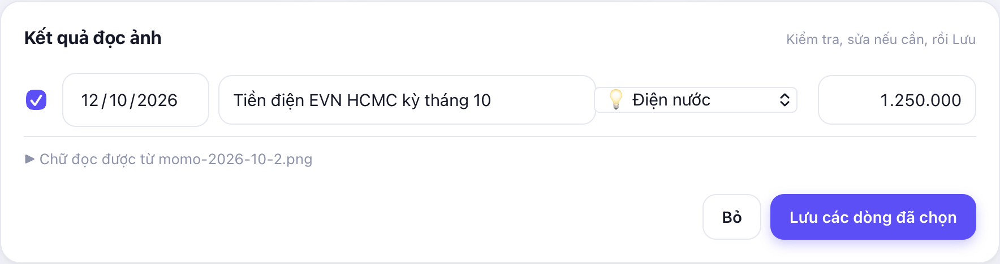
Ảnh đọc tốt nhất khilà ảnh chụp màn hình trực tiếp trên điện thoại (không chụp màn hình bằng camera),
thấy rõ dòng Số tiền và Thời gian.
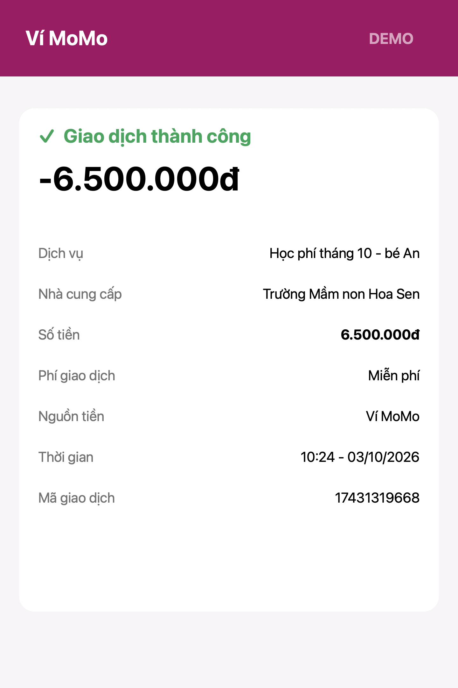
Cách 3 · Nhập tay: học phí, lương, đi chợ…
Bấm nút ＋ Thêm khoản ở góc trên bên phải. Gõ số tiền thoải mái: 1.500.000, 1,5tr,
200k đều được; app hiện số đã hiểu ngay bên dưới. Chọn Khoản thu khi nhập lương. Hạng mục để
✨ Tự động thì app tự đoán theo mô tả. Ô Trả bằng: ghi tên thẻ (ví dụ Visa Techcombank) hoặc
Tiền mặt. App nhớ lựa chọn lần trước, và cuối tháng dùng thông tin này để đối chiếu với sao kê (phần 6).
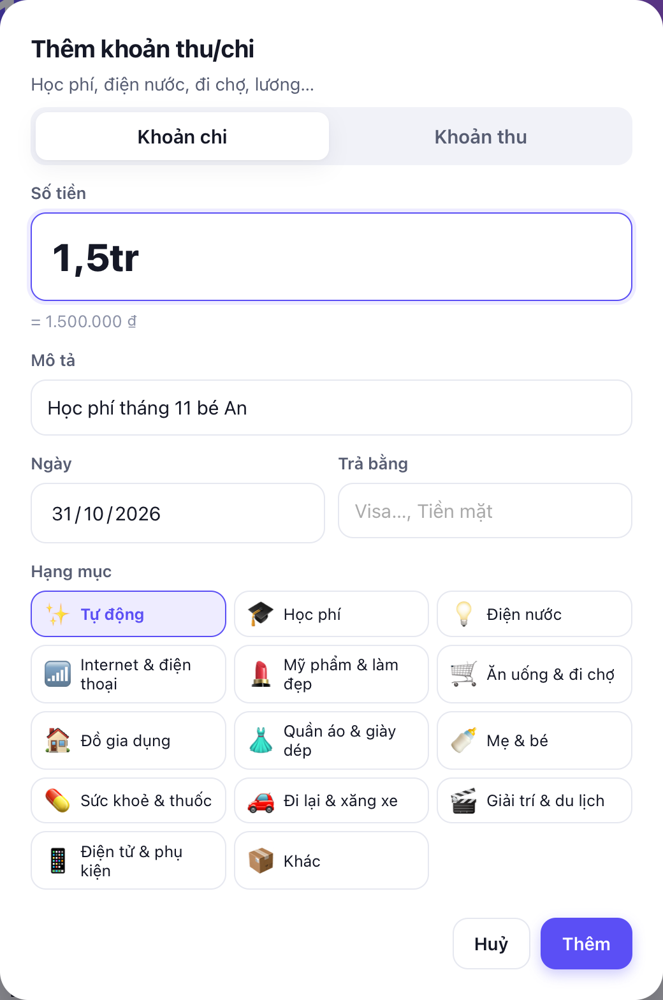
Nên nhập lương hằng thángđể app tính được % thu nhập đã chi và số tiền còn lại.
4. Xem tháng này chi bao nhiêu cho từng việc
Mục Tổng quan cho biết:
- Thẻ tím: tổng chi trong tháng, thu nhập, số còn lại, và vòng tròn % thu nhập đã chi.
- Chi theo hạng mục: mỗi việc chiếm bao nhiêu % tổng chi, kèm so sánh với tháng trước (▲ tăng / ▼ giảm).
- 12 tháng gần nhất: rê chuột lên cột để xem số, bấm vào cột để mở tháng đó.
- Nút ‹ › cạnh tên tháng dùng để xem tháng trước hoặc tháng sau.
- Bấm ô Shopee hoặc TikTok Shop để xem ngay các đơn của sàn đó trong tháng.
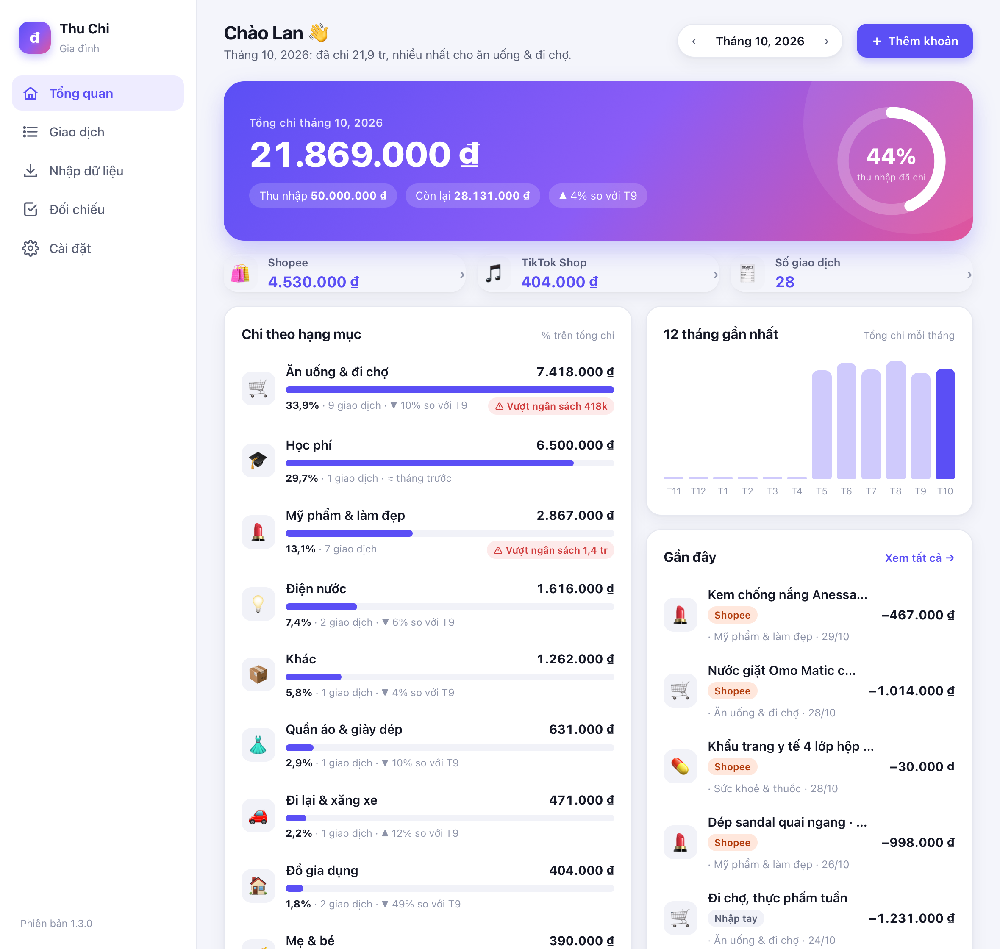
Bấm vào một hạng mục để xem từng khoản chi trong đó. Bấm vào một giao dịch để sửa, xoá, hoặc đánh dấu
Không tính (ví dụ đơn đã trả hàng).
5. Ngân sách và tự phân loại
Sửa hạng mục, và dạy app nhớ
Nếu app xếp sai hạng mục, bấm vào giao dịch rồi chọn hạng mục đúng. App sẽ hỏi “Ghi nhớ…” kèm một từ khoá gợi ý.
Giữ dấu tick và bấm Lưu: lần sau mô tả nào có chữ đó sẽ tự vào đúng chỗ, và các giao dịch cũ giống vậy cũng được xếp lại.
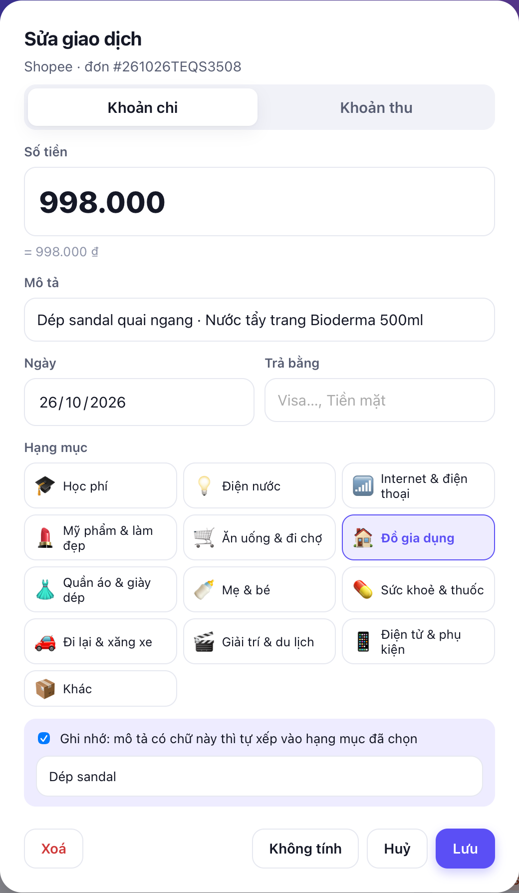
Đặt ngân sách tháng
Vào Cài đặt → Hạng mục & ngân sách, gõ số tiền vào ô Ngân sách/tháng (ví dụ 1,5tr).
Khi chi quá, Tổng quan hiện cảnh báo đỏ ⚠ Vượt ngân sách.
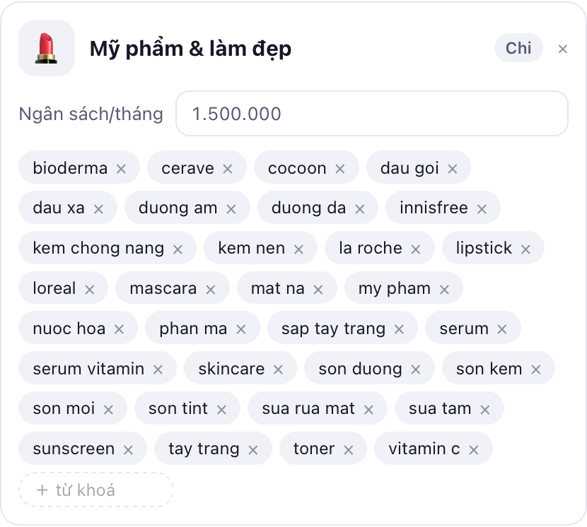
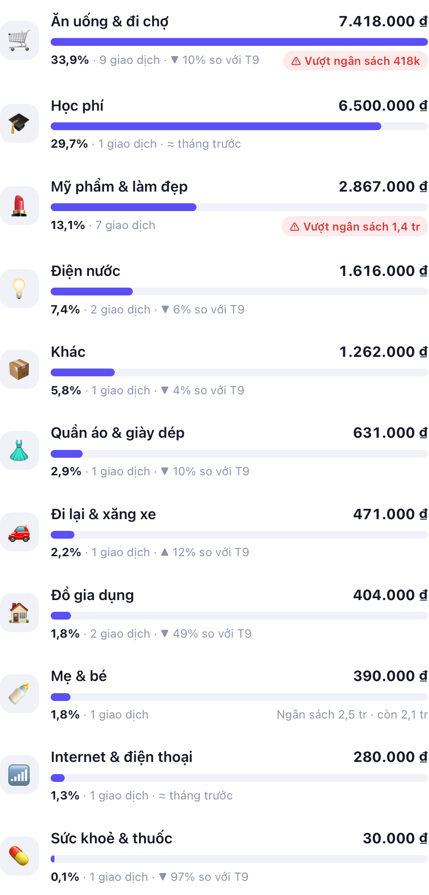
6. Đối chiếu sao kê thẻ Visa
Ngân hàng không gửi email cho mỗi lần quẹt thẻ, nên khoản chi bằng Visa phải ghi tay, và rất dễ quên hoặc ghi sai
(tiền tip, phí). Cuối tháng, đối chiếu với sao kê để bắt hết những khoản đó:
- Vào internet banking của ngân hàng, tải sao kê thẻ của tháng dưới dạng Excel (nên chọn) hoặc PDF.
Sao kê gửi qua email thường là PDF có mật khẩu (hay là ngày sinh hoặc số CCCD).
- Trong app, vào mục Đối chiếu. Gõ tên thẻ đúng như ô “Trả bằng” (ví dụ Visa Techcombank),
bấm Chọn file sao kê, rồi bấm Đối chiếu. PDF có mật khẩu thì app sẽ hỏi mật khẩu.
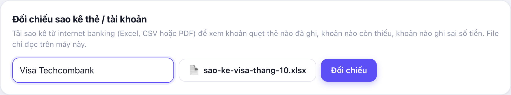
App chia kết quả thành 4 ô:
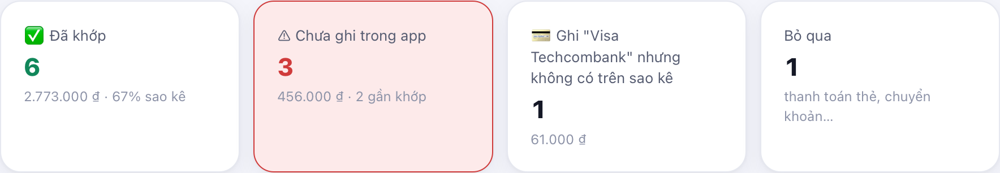
| Ô | Ý nghĩa và cách xử lý |
|---|
| ✅ Đã khớp | Dòng sao kê đã có trong app (ngày lệch 1–3 hôm vẫn tính là khớp). Không cần làm gì. |
| ⚠ Chưa ghi trong app | Đã quẹt thẻ nhưng chưa ghi. Bấm ＋ Thêm vào app. Nếu app thấy một khoản gần giống
(lệch vì tiền tip, phí…), bấm Ghép, sửa thành số sao kê. |
| 💳 Ghi “Visa…” nhưng không có trên sao kê | Có thể ghi nhầm số tiền hoặc ngày, hay thật ra đã trả bằng tiền mặt. Bấm vào khoản đó để sửa. |
| Bỏ qua | Thanh toán thẻ, chuyển khoản… App tự bỏ qua; không phải khoản chi. |
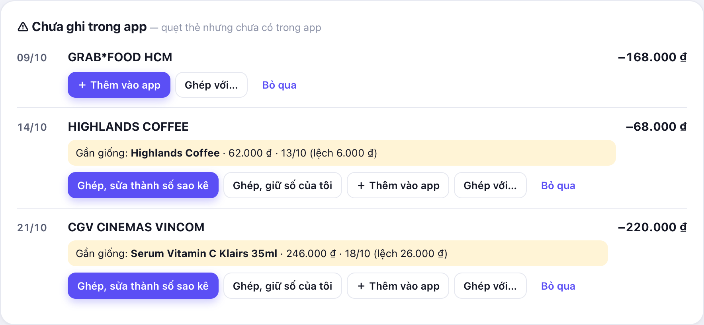
MẹoĐối chiếu xong, tổng chi trong tháng mới thật sự đầy đủ. Đơn Shopee nào đã thêm từ sao kê thì khi đồng bộ
Gmail về sau sẽ được gộp lại, không bị tính hai lần.
7. Sao lưu và những điều cần biết
Sao lưu: nên làm mỗi tháng
Vào Cài đặt → Dữ liệu:
- 📂 Mở thư mục dữ liệu → chép file
budget.db sang iCloud Drive hoặc USB. File này chứa toàn bộ dữ liệu.
- ⬇︎ Xuất CSV → được file mở bằng Numbers hoặc Excel.
Những điều cần biết
| Điều cần biết | Nên làm gì |
|---|
| Dữ liệu chỉ nằm trên máy này, không tự đồng bộ sang máy khác | Muốn xem chung với chồng/vợ: dùng một máy và thêm cả hai Gmail (Cài đặt → ＋ Thêm Gmail) |
| App chỉ đọc Gmail khi bạn bấm Đồng bộ ngay | Đồng bộ mỗi tuần |
| Shopee/TikTok có thể không gửi email cho từng đơn | Chụp màn hình trang “Đơn mua” |
| App không đọc thư trong Spam | Thấy email đơn hàng thật trong Spam thì bấm “Không phải thư rác”, rồi đồng bộ lại |
| Không kết nối thẳng được với ngân hàng | Cuối tháng tải sao kê để đối chiếu (phần 6), hoặc chụp màn hình biên lai chuyển khoản |
| Đổi mật khẩu Gmail thì Google huỷ mật khẩu ứng dụng | Cài đặt → Gỡ tài khoản → ＋ Thêm Gmail lại (tạo mật khẩu ứng dụng mới) |
| Khi cài bản mới, máy có thể hỏi quyền dùng Keychain | Bấm Always Allow (Luôn cho phép) |
Khi gặp lỗi
Chụp màn hình lỗi (⌘ ⇧ 4) và gửi cho người cài app giúp bạn. Nếu được hỏi file log: Cài đặt → 📂 Mở thư mục dữ liệu → file app.log.
8. Ghi chú cho bản thử nghiệm
Đây là bản thử nghiệm. Ý kiến của bạn quyết định bản chính thức có được phát hành hay không. Vừa làm vừa ghi lại giúp nhé
(ghi tay hay nhắn tin đều được):
| Câu hỏi | Ghi chú của bạn |
|---|
| Từ lúc mở file cài đặt tới lúc thấy “Đã kết nối!” mất bao nhiêu phút? | |
| Bạn có phải hỏi ai không? Bị vướng ở bước nào? | |
| Bước tạo “Mật khẩu ứng dụng” có dễ hiểu không? | |
| Đồng bộ Gmail: có thấy đơn Shopee/TikTok/MoMo không? Số tiền có đúng không? | |
| Ảnh chụp MoMo/ngân hàng: số tiền và ngày có đúng không? | |
| Đối chiếu sao kê Visa: app có đọc đủ mọi dòng không? Có khoản nào ghép sai không? | |
| Chữ nào trong app khó hiểu hoặc sai chính tả? | |
| Bạn muốn app có thêm gì? | |
Thu Chi Gia Đình {{VERSION}} · Hướng dẫn tạo ngày {{DATE}}